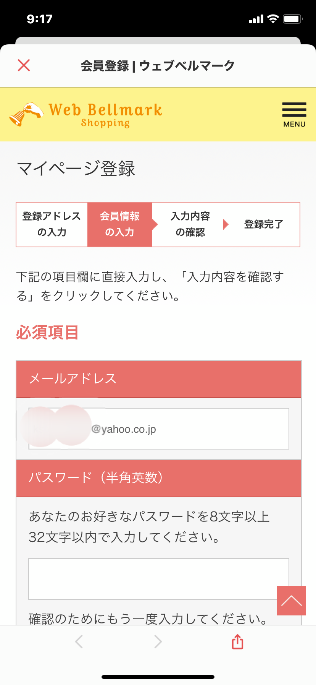

源小保護者のみな子さんは、最近ウェブベルマークをはじめてルンルンです。お友達のもと子さんにも教えてあげることにしました。
みな子
 もと子さん、お久しぶり♪
もと子さん、お久しぶり♪
わたし最近、ウェブベルマーク始めたのよ〜。
ウェブベルマーク？
なんか難しそうね〜。
なんか難しそうね〜。
わたしパソコン苦手だから、PTAでまた新しいことが始まると困るのよね〜。
みな子
それが超カンタンなの。ネットで買い物する人なら誰でもできちゃう。
例えば楽天だったら、自分に付くポイントとは別に、源小にベルマークのポイントが寄付できちゃうの！
え？自分に付くポイントとは別に寄付ができるの？
それなら、やらなきゃ損ね！
こうして、もと子さんも、さっそく登録してみることにしました。

ホントにわたしにできるかしら・・・？
ドキドキ。
まず、マイページ登録をポチッと！
わたしは、メールアドレスで登録しよう〜っと。
ここにアドレスを入れれて送信！
あ！すぐにメールが来たわ。
メールにあるURLをクリックしすると・・・。

この画面にメールアドレスと、パスワードを入力すればいいのね。
なんだカンタンじゃないの！
さぁ、いよいよ、源小を選ぶわよ！
千葉県、千葉市、若葉区・・・。
あった！！源小！！
登録完了〜♪
マイページを確認すれば、自分の支援回数や金額もチェックわかるんだ。
これならヤル気でるわ〜。
グループ名？
一応、源小学校PTAって入れておこうかな。（この欄は、入力なしでもOKです）
みな子
もと子さん、できた〜？
できたわ！！思ったよりカンタンだったよ〜
ちょうど楽天のカートに保留にしていたものがあったから、今からお買い物してみようかと思って♪
みな子
ちょっと待って！！
ログインした状態のウェブベルマークのトップページから、楽天に飛んでね。
でないとポイント対象のお買い物にならないわよ〜。
でないとポイント対象のお買い物にならないわよ〜。
なるほど！
じゃあ、スマホの画面にブックマークしておくと、これからも忘れないわね。
忘れっぽいもと子さんは、さっそくウェブベルマークのトップページをスマホ画面にブックマークしてみました。
楽天だったら１万円のお買い物で源小に４０円も寄付ができるなんて、すごいわよね。
チリも積もれば山となる！！
こうして画面にブックマークしておけば、忘れないわね！
みな子
もと子さん、ウェブベルマークのトップ画面にある、利用可能ショップ見た？
楽天だけじゃないのよ！
見た、見た！
ホットペッパービューティや、ふるさと納税もあったわね。
ホットペッパービューティや、ふるさと納税もあったわね。
旅行会社も充実してた！旅行の前には要チェックね。
みな子
ヤマダ電機とか、家電量販店のサイトも最近増えたのよ！
ASKULで備品発注している企業さんに協力してもらえたら、めちゃくちゃポイントたまっちゃうかもね。
そっか！
源小保護者じゃなくても、誰にでも協力していただけるんだ！
源小保護者じゃなくても、誰にでも協力していただけるんだ！
今度、実家のじいちゃん、ばあちゃんにもお願いしてみよ〜。
ウェブベルマークでの源小応援に、ぜひご協力ください。
そして、PTA活動も少しでも楽にしていきましょう！！
ご卒業や転校などの節目で、支援校はいつでも変更することもできます。